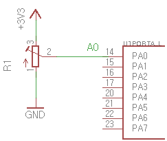
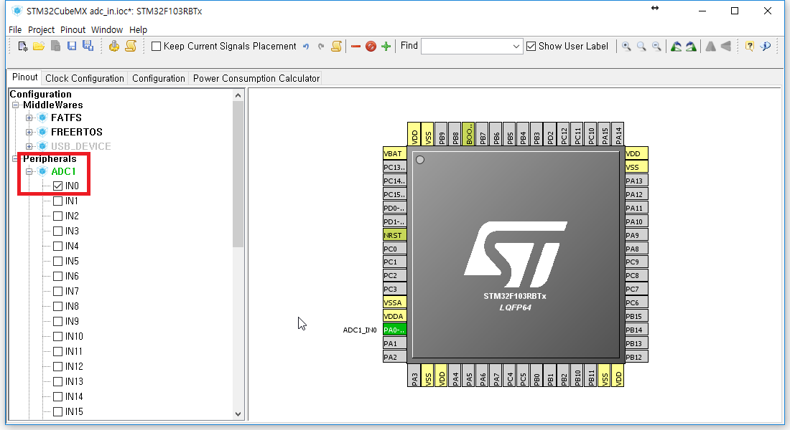
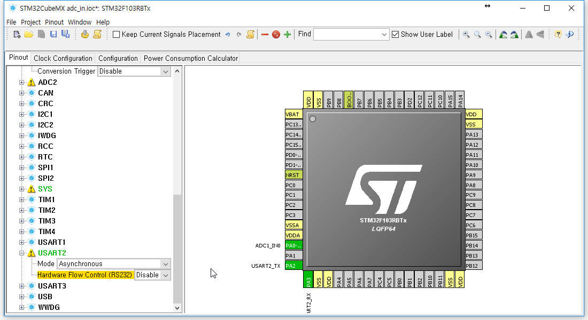
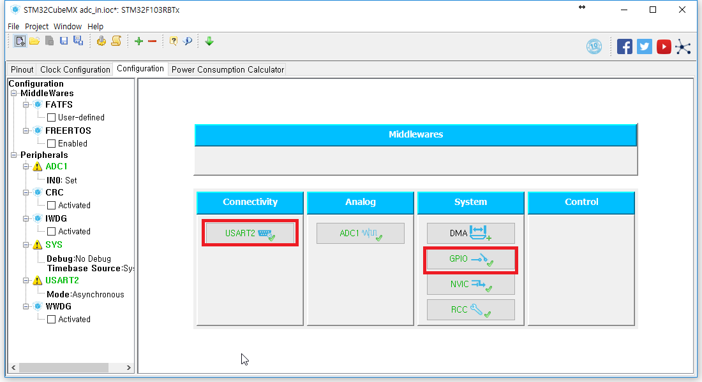
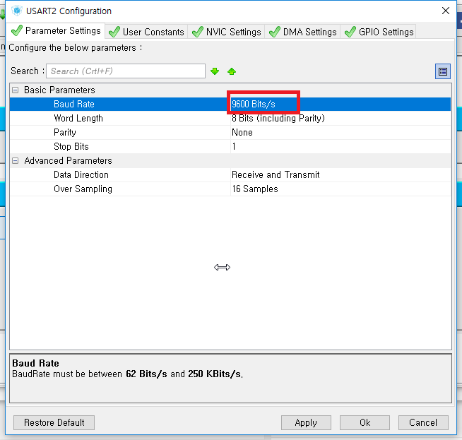
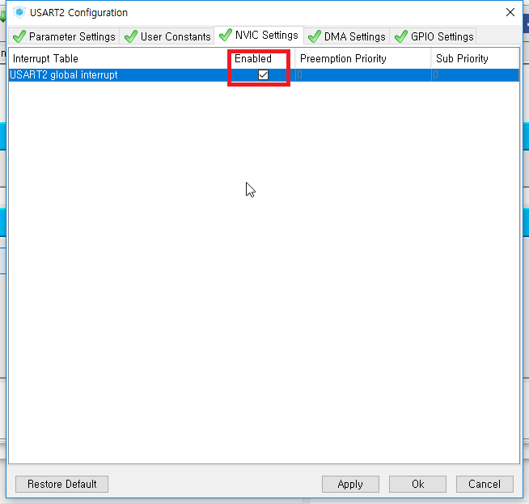
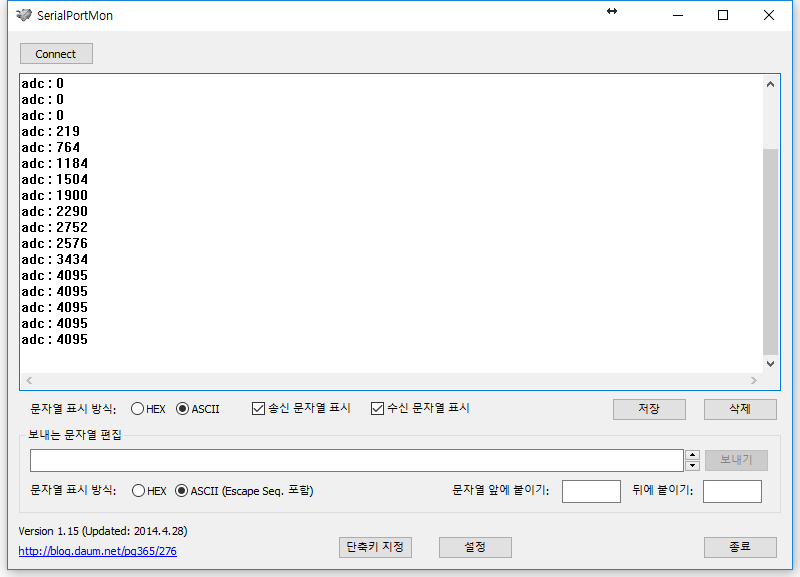

ADC 사용하기 - 아날로그 값 읽기
이번 시간에는 ADC를 사용해 보도록 하겠습니다.
ADC는 Analog Digital Converter의 약자로 아날로그 신호를 디지털 신호로 변환할 때 사용합니다.
STM32F103RB는 12 bit의 ADC를 내장하고 있으며 최대 16채널까지 사용 가능합니다.
이번 시간에는 별도의 가변저항(Analog Signal을 넣어주기 위해)이 필요합니다.
회로도
3.3V에서 값이 최대가 되므로 3.3V에 가변저항의 +를
GND에 가변저항의 -를
A0에 가변저항의 SIG를 연결해 줍니다.

STM32Cube
이전 시간의 파일을 가져와서 Pinout - Clear Pinouts를 누르거나 Ctrl + P를 눌러 핀을 초기화합니다.
핀을 클릭해서 기능을 설정할 수도 있지만 왼쪽의 Configuration 탭을 이용하여 설정해 보겠습니다.
ADC1 왼쪽의 +를 눌러 하위 탭을 연 뒤 IN0를 체크해 줍니다.

마찬가지로 USART2의 하위탭을 연 뒤 Mode 에서 Asynchronous를 선택합니다.

Configuration으로 넘어와서 USART2를 설정해 줍니다.

먼저 USART2를 눌러 Parameter Settings를 설정합니다.
Baud Rate를 9600으로 설정해주면 됩니다.

NVIC Settings로 이동하여 Enabled에 체크해 줍니다.

Ok를 눌러 USART2 창을 닫고 톱니바퀴를 이용하여 코드를 생성해 줍니다.
uVision5
printf 함수를 사용할 것입니다.
이전 시간과 같이 USER CODE BEGIN 0 안에 fputc 함수를 넣어줍니다.
/* USER CODE BEGIN 0 */
int fputc(int ch, FILE *f)
{
uint8_t temp[1] = {ch} ;
HAL_UART_Transmit(&huart2, temp, 1, 50) ;
return(ch) ;
}
/* USER CODE END 0 */
USER CODE BIGIN 2 아래에 ADC 값이 저장될 변수를 만들어 줍니다.
/* USER CODE BEGIN 2 */
uint16_t adcValue ;
USER CODE BEGIN 3 안에 ADC 값을 받아오고 출력하는 코드를 넣어줍니다.
/* USER CODE BEGIN 3 */
HAL_ADC_Start(&hadc1); // start using ADC
HAL_ADC_PollForConversion(&hadc1, 100) ; //set adc address and time out value
adcValue = HAL_ADC_GetValue(&hadc1) ; // get adc value
printf("adc : %d\n", adcValue) ;
HAL_Delay(100) ;
마지막의 HAL_Delay는 시리얼 통신 프로그램에 버퍼가 너무 많이 쌓여서 넣어주었습니다.
Serial 통신 프로그램을 실행하고 보드를 재시작한 뒤 값을 확인합니다.
